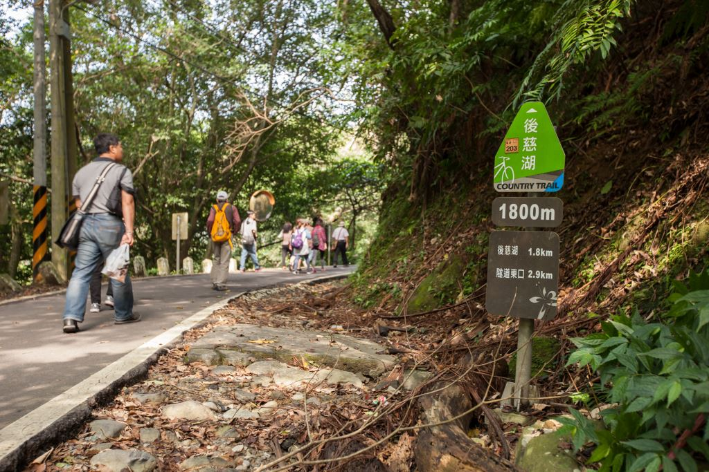
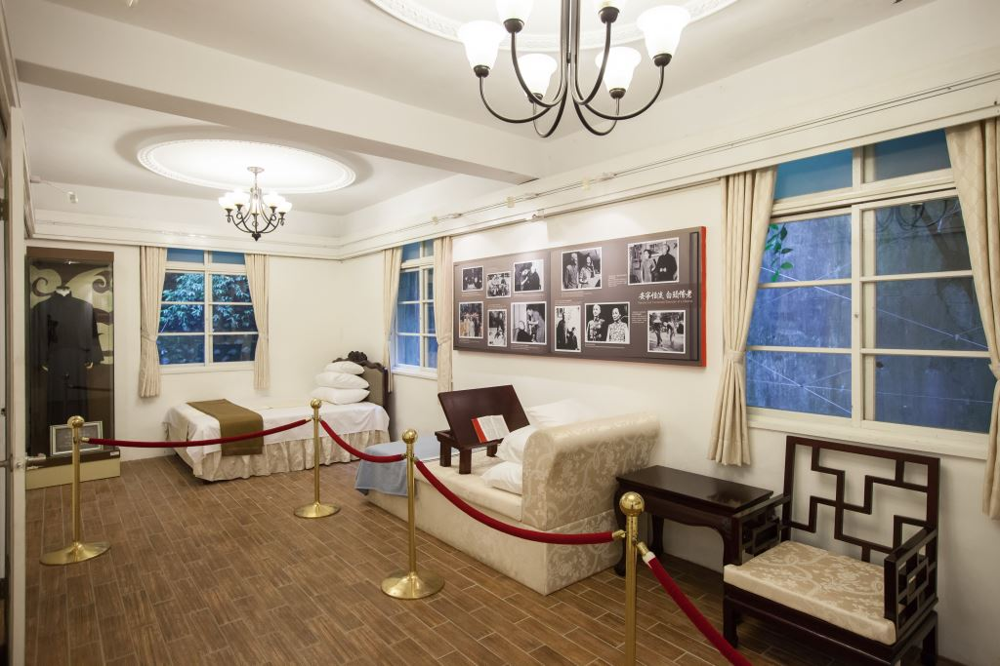
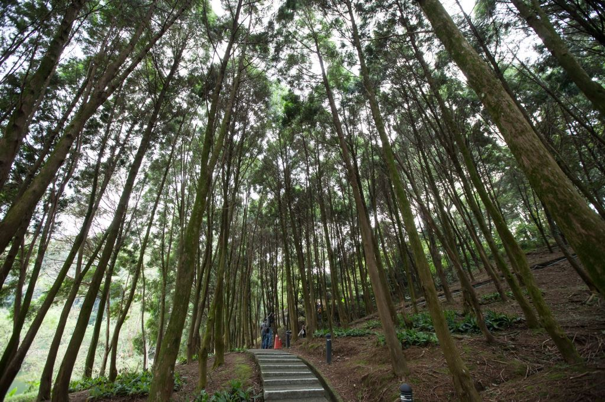
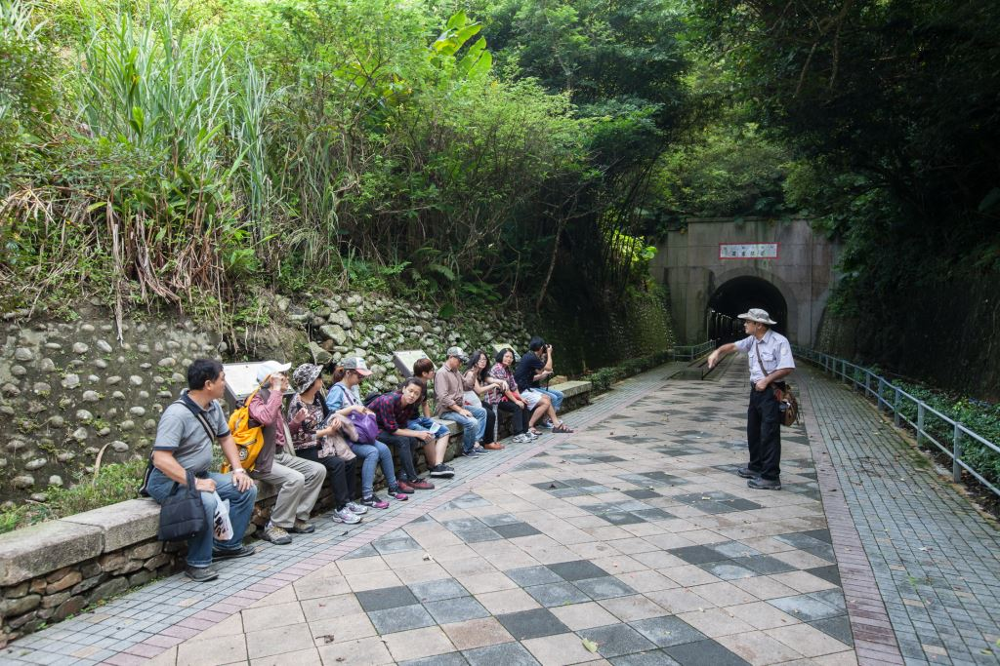

新月形的後慈湖，原名「龍過脈埤」。由於後慈湖長年列為軍事管制區，所以生態及環境的保持相當完整。主要以樟樹及肖楠為代表性植物，而湖畔的步道也是賞鳥、賞蝶、賞楓的絕佳地點。
一直被披上神秘面紗的後慈湖，因為軍事單位的解禁，讓這處世外桃源開始和遊客們見面。後慈湖原為蔣公與夫人散步、划船的小湖，園區步道由慈湖側門進入後，越過小丘陵，約兩公里路程，沿途景觀迷人，還有戒嚴管制時期所留下來的指揮所、碉堡、管制鐵門、辦公室等，相當有看頭。
桃園市政府於2009年重新開放參觀之際，保留5棟官舍的原始風貌，重現後慈湖的歷史生態與蔣氏家族的人文生活，並複刻蔣家居家生活空間，及規劃後慈湖互動生態館。
園區還有豐富的生態，人面蜘蛛、鳥類、蛙類十分多樣，還有國內少見的白樺木，以及肖楠木的森林浴步道，漫步其中並欣賞後慈湖的倒影，您也可以享受到元首級的休閒活動。
後慈湖因仍為管制區，因此必需向「桃園市風景區管理處」申請核准才能進入，而且還要有導遊志工陪同，團進團出才能一親後慈湖芳澤。 現在起只要搭乘台灣好行景點接駁公車慈湖線，即可憑當日車票享免事先預約，只需至現場登記即可入園，且入園費半價的優惠。